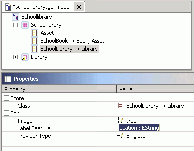
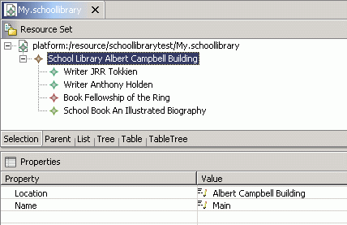

| Generate Model Code |
Generate Edit Code |
Generate Editor Code |
|
| Model <M> |
plugin.xml <M>Plugin.java (and files associated with each package in the model) |
plugin.xml plugin.properties <M>EditPlugin.java (and files associated with each package in the model) |
plugin.xml plugin.properties <M>EditorPlugin.java (and files associated with each package in the model) |
| Package <P> |
<P>Package.java <P>PackageImpl.java <P>Factory.java <P>FactoryImpl.java <P>Switch.java <P>AdaptorFactory.java <P>ResourceImpl.java <P>ResourceFactory.java (and files associated with each Class and Enum in the package) |
<P>ItemProviderAdaptorFactory.java (and files associated with each Class in the package) |
<P>Editor.java <P>ModelWizard.java <P>ActionBarContributor.java |
| Class <C> |
<C>.java <C>Impl.java |
<C>ItemProvider.java |
|
| Enum <E> |
<E>.java |
